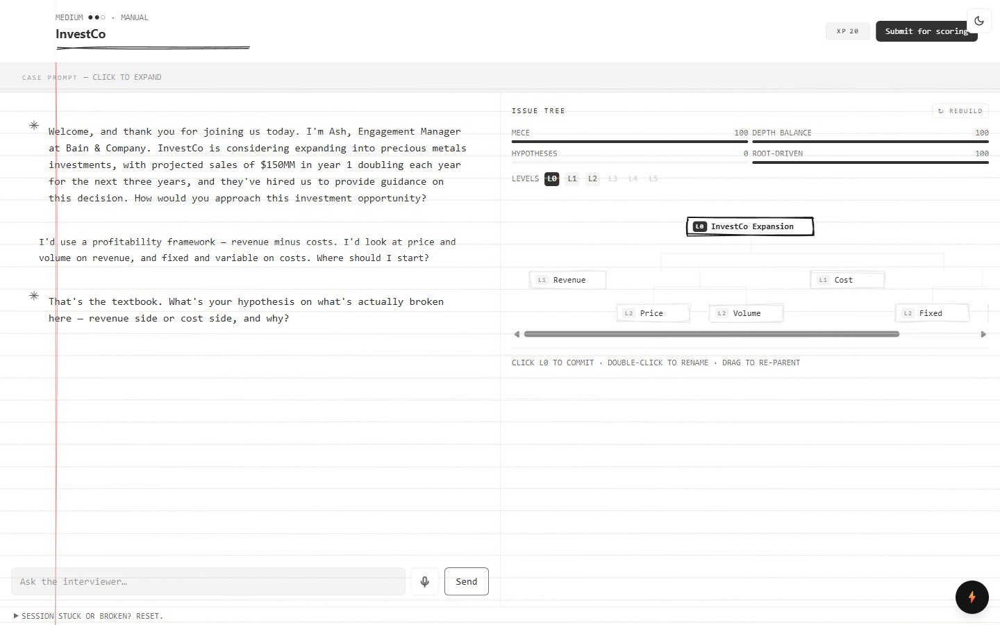
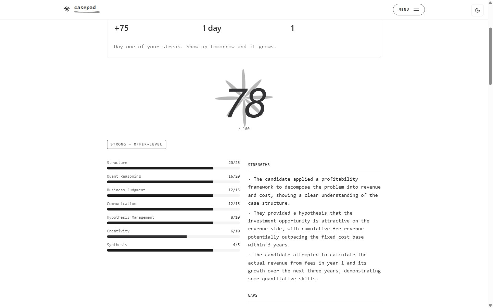
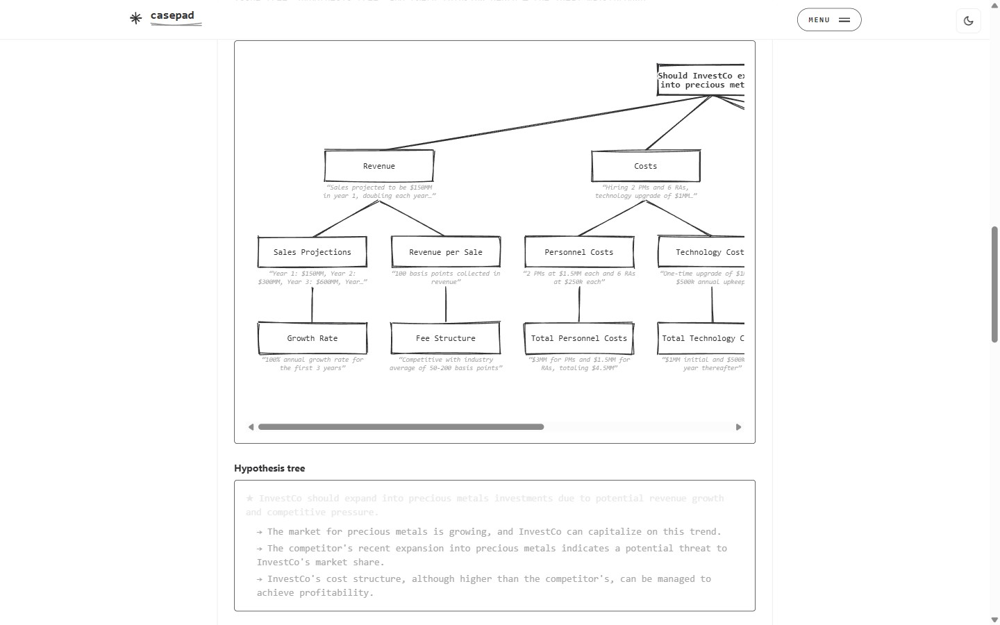

Into an AI that grills you exactly like the real thing.
You talk, it grills you, it scores you, and it shows you how a top candidate would’ve done it. Free.

It asks the case, pushes back on weak answers, makes you defend every number, and won’t hand you data until you ask the right question — drawing your issue tree as you think.

A real score the second you finish — on structure, math, and judgment — with the exact gaps that would’ve cost you the offer. The truth you usually only get after the rejection email.

Exactly how a top candidate would’ve cracked it — the full issue tree, the hypotheses, and the step-by-step — so you learn what “brilliant” looks like.
2,600+ real cases across 5 tracks — consulting, product, finance, marketing, strategy. Real cases from the real world — not AI-invented ones.
Paste a case into ChatGPT and it’s seen the solution — so it can’t make you earn the data, it won’t push back, and it’ll tell you you’re brilliant.
CasePad hides the answer, makes you earn every fact, and is built from how real interviews actually run. It behaves like the room — not the cheat sheet.
Unlimited mock interviews. Zero cost.
↩︎ Repost if someone you know is prepping.